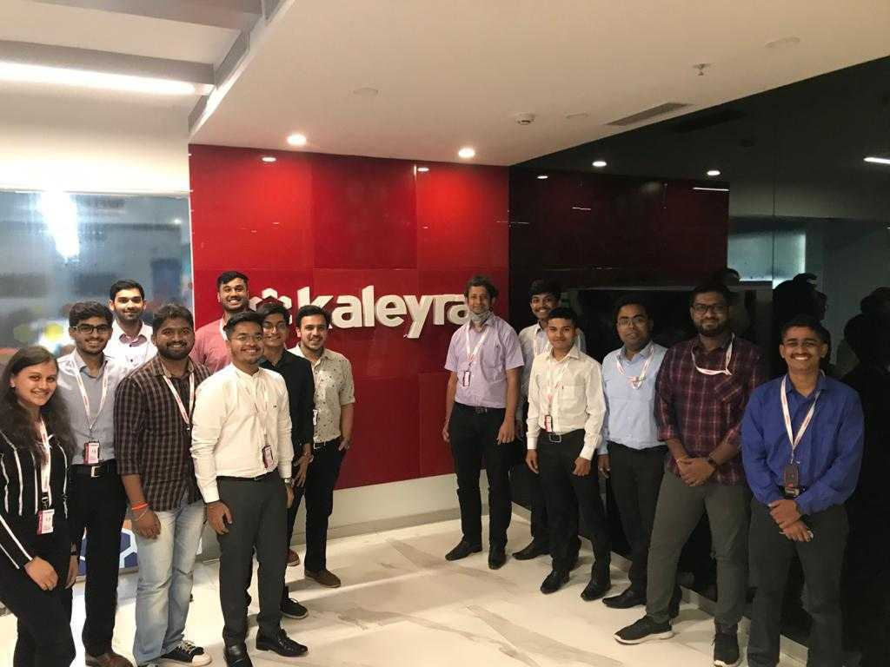

Work Experience
Associate Software Engineer (Kaleyra)
I have worked in Kaleyra for two year as an associate softtware engineer. I was part of core team, specifically mentioning billing team. Few of my major roles and impacts are mentined below:
- Involved in developing GO LANG micro services to process numerous data from various databases like MySQL, Redis and MongoDB.
- Developed multiple features for billing like WhatsApp Billing, Subaccount features, Postpaid fulfillment, Invoicing and Report, Campaigns, CRON jobs and many more.
- Rewrote the Billing legacy code from PHP to GO LANG and achieved a huge reduction in throughput time (400-500 ms to 4-5 ms).
- Monitor application performance using New Relic and optimize code if application throughput is reduced.
Please find my official document of employment here.
Software Engineer Intern (Kaleyra)
I worked as Software Engineer Intern for 4 months. Following are the things I got to learn and work upon:
- Developed and deployed various Full Stack projects using MERN stack.
- Assisted the operation team on Distributed Ledger Technology (DLT) implementation.
Please find my official document of internship here.